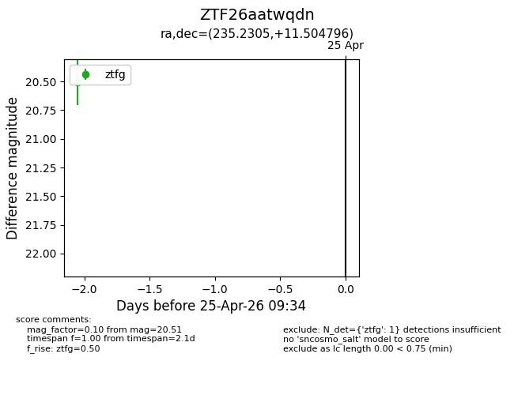
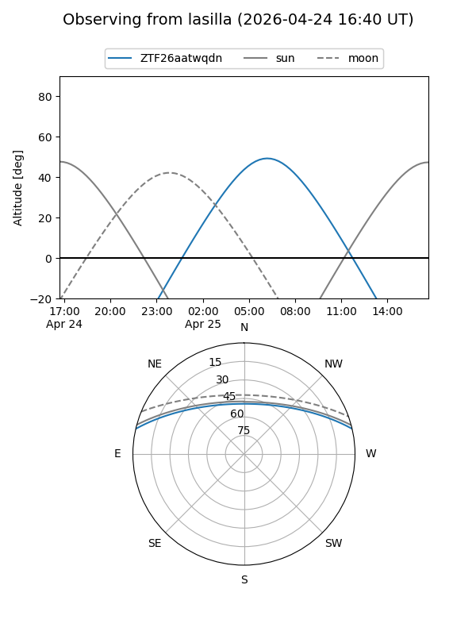
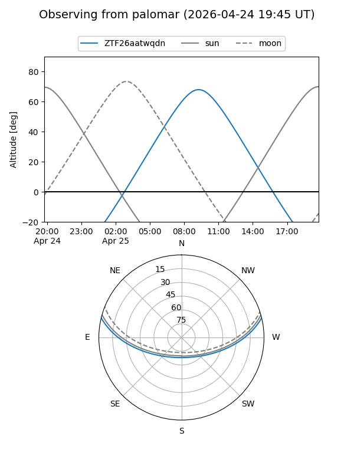

ZTF26aatwqdn
Target ZTF26aatwqdn at 2026-04-25 09:35
Aliases and brokers:
FINK: link
Lasair: link
ALeRCE: link
alt names
ZTF26aatwqdn (ztf,fink_ztf)
Coordinates:
equatorial (ra, dec) = 235.2305,+11.50480
equatorial (HMS+DMS) = 15:40:55.33,+11:30:17.27
galactic (l, b) = (19.9204,+47.32873)
Flags:
Photometry:
last ztfg=20.51
1 ztfg detections
Lightcurve

Visibility


Additional plots